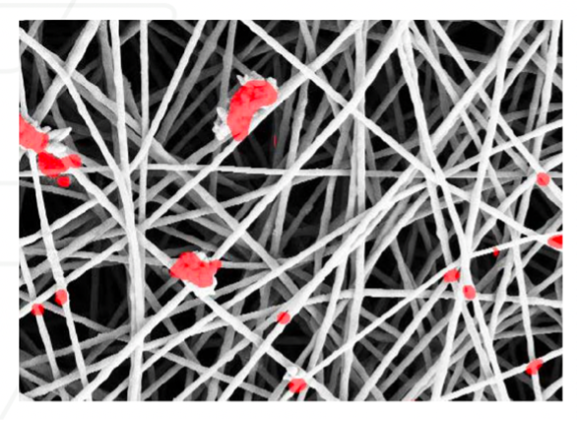
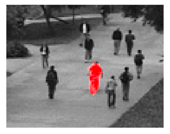
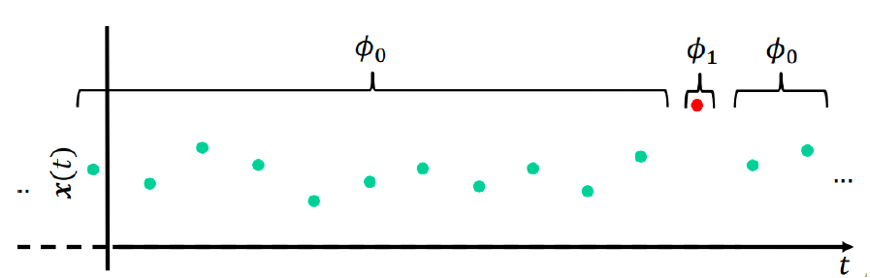
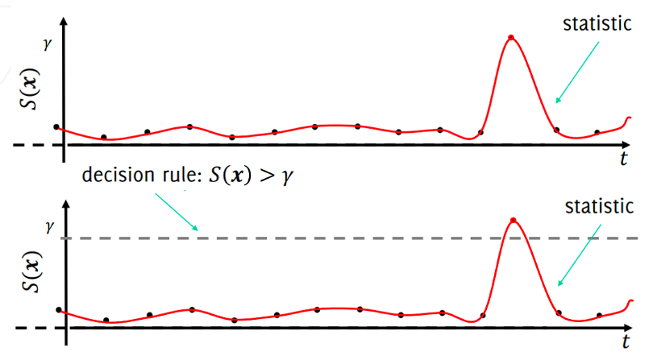
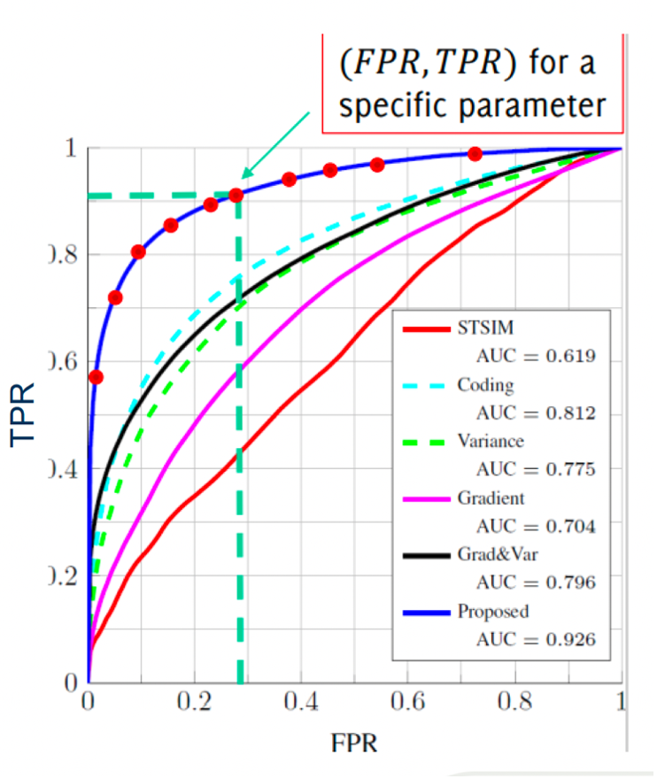
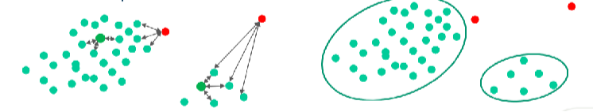
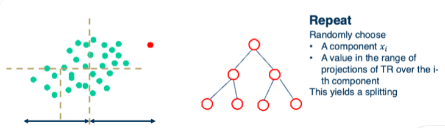
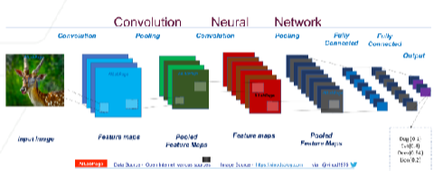
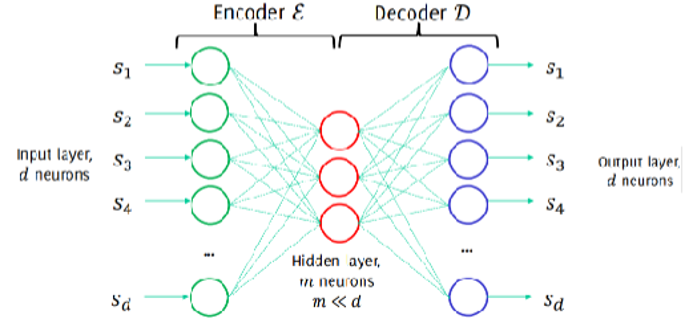

1. Lecture Objectives
This lecture introduces anomaly detection as a machine learning framework for identifying rare, unusual, or unexpected patterns relative to a learned notion of normal behavior. We formalize anomaly detection in a statistical framework by defining anomalies via normal and anomalous data-generating distributions, and by presenting the two core components of a detector: a statistic (or anomaly score) and a decision rule (typically thresholding). We then develop evaluation methodology for anomaly detection under class imbalance, including TPR, FPR, precision, ROC curves, and AUC, and we analyze how the decision threshold controls the trade-off between missed detections and false alarms. Next, we study two practical learning settings—semi-supervised (novelty detection) and unsupervised anomaly detection—highlighting their assumptions and representative techniques such as density-based detection, distance-based methods, and Isolation Forest. Finally, we focus on image anomaly detection methods, including patch-based statistical modeling, adjacent pixel-value correlation structure, and neural network-based confidence scoring via Maximum Softmax Probability (MSP), and we connect these ideas to the manifold hypothesis and reconstruction-based approaches (e.g., autoencoders), including gradient-based regularization such as GradCON and hybrid/ensemble strategies for robust detection in high-dimensional settings .
2. Anomaly Detection
Anomaly detection refers to a class of machine learning techniques designed to identify rare, unusual, or unexpected patterns that deviate from a learned notion of normal behavior. Rather than focusing on predicting predefined labels, anomaly detection aims to model what is considered “normal” and then flag observations that significantly differ from this model. Although anomaly detection is not a standalone application domain, it plays a crucial role across many fields, including fraud detection, medical diagnosis, cybersecurity, industrial monitoring, and fault detection. In this lecture, we introduce the anomaly detection framework and discuss its core components, including the formal definition of anomalies, problem formulation, evaluation metrics, different anomaly detection settings, statistical approaches, reconstruction-based approaches, and the GradCON method .
2.1 Definition
An anomaly (also referred to as an outlier or novelty) is a data point or pattern that deviates significantly from the expected distribution of normal data. More formally, anomaly detection involves learning a model of normal data and identifying samples that have low likelihood or high deviation relative to this learned model. The central challenge lies in defining and modeling “normality,” since anomalies are inherently rare and often diverse in nature.
In a probabilistic framework, we assume that normal data are generated from an underlying distribution \(P_N\). Anomalies can then be interpreted as observations that are unlikely under \(P_N\), or equivalently, as samples that may originate from a different distribution \(P_A\), where \(P_A \neq P_N\). Importantly, anomalies do not necessarily arise from non-stationary processes; rather, they correspond to deviations from the dominant data-generating process. In many practical settings, \(P_A\) is unknown, poorly sampled, or highly heterogeneous, which makes anomaly detection particularly challenging.
In time-series contexts, normal behavior is sometimes modeled as a stationary process (with stable statistical properties such as mean and variance). However, anomalies may appear either as rare realizations within a stationary system or as changes in the underlying generating mechanism. Therefore, anomaly detection is fundamentally about distinguishing rare or structurally inconsistent observations from the learned representation of normal data, regardless of whether the deviation arises from distributional shift, structural corruption, or unexpected dynamics.
2.2 Examples of Anomaly Detection
Anomaly detection appears in a wide range of real-world applications where rare but critical events must be identified within large volumes of normal data. One common example is fraud detection in financial systems, where the goal is to identify suspicious transactions within streams of otherwise normal credit card activity. Another important application arises in healthcare, where anomaly detection is used to identify arrhythmias in electrocardiogram (ECG) signals that deviate from typical heart rhythms. In computer vision, anomaly detection can be used to locate defective regions in images that do not conform to a reference pattern, such as manufacturing defects in materials or unexpected objects in surveillance footage.
A key observation across these domains is that anomalies often appear as spurious or irregular elements embedded within structured data. Although anomalous samples are typically rare, they are often the most informative and valuable data points in a dataset because they highlight unusual behavior, critical failures, or events of interest that require further investigation.
Figure 1 illustrates an example of structural anomalies within a material, where irregular regions deviate from an otherwise consistent pattern. Such defects are often subtle and difficult to detect manually, motivating automated anomaly detection techniques.

Anomaly detection is also widely used in public safety and surveillance scenarios. Figure 2 shows an example in which an unusual individual is detected within a crowd. In such settings, anomaly detection systems help identify unusual or suspicious behavior in large-scale visual data.

2.3 Anomaly Detection in Images
To study anomaly detection in images, we first formulate the problem mathematically. Let \(s\) denote an image defined over a discrete pixel domain \(x \in \mathbb{Z}^2\). For a specific pixel location \(c \in x\), the value \(s(c)\) represents the image intensity (or feature value) at that pixel.
The goal of image anomaly detection is to identify pixels or regions that deviate from normal image structure. This task can be expressed through the estimation of an anomaly mask \(\Omega\), which assigns a binary label to each pixel: \[\Omega(c)= \begin{cases} 0, & \text{if pixel $c$ belongs to a normal region},\\ 1, & \text{if pixel $c$ belongs to an anomalous region}. \end{cases}\]
While this formulation focuses on images, anomaly detection is often studied in a more general setting where observations are collected over time. Consider a set of data samples represented as \(\{x(t)\}_{t=t_0}^{T}\), where each observation \(x(t) \in \mathbb{R}^d\). These samples are assumed to be generated by an underlying probabilistic process. In the normal case, data are drawn from a distribution \(\phi_0\), which represents typical or expected behavior.
Anomaly detection then reduces to identifying observations that deviate significantly from this normal distribution. A simple generative model assumes that each observation is produced by one of two distributions: \[x(t) \sim \begin{cases} \phi_0, & \text{if $x(t)$ belongs to normal data},\\ \phi_1, & \text{if $x(t)$ belongs to anomalous data}. \end{cases}\]
Under this perspective, anomaly detection becomes the task of distinguishing samples generated by the normal distribution \(\phi_0\) from those generated by an alternative distribution \(\phi_1\). This probabilistic view unifies anomaly detection across images, time series, and high-dimensional data.
2.4 Anomaly Detection in a Statistical Framework
A classical approach to anomaly detection is based on statistical hypothesis testing. The core idea is to monitor data using a statistic that behaves predictably under normal conditions and to trigger an alarm when the statistic deviates significantly from this expected behavior.
In this framework, anomaly detection consists of two fundamental components: (1) a statistic that summarizes the behavior of the data, and (2) a decision rule that determines whether the observed behavior is considered normal or anomalous.
Figure 3 illustrates this idea for a time-series signal: most observations are generated by a normal process \(\phi_0\), while occasional samples arise from an anomalous process \(\phi_1\).

2.4.1 Statistics
A statistic is a numerical quantity computed from data that summarizes its behavior. Under normal operating conditions, the statistic follows a predictable distribution, and significant deviations from this expected behavior may indicate anomalous data.
Typical statistics used in anomaly detection include the sample mean or moving average, the sample variance or signal energy, log-likelihood values under a probabilistic model, classifier confidence scores, and learned anomaly scores designed specifically to highlight deviations from normal patterns.
The key objective is to select a statistic that remains stable for normal data while being sensitive to unusual or unexpected observations.
2.4.2 Decision Rule
The decision rule converts the statistic into a binary decision: \[\text{Normal} \quad \text{vs.} \quad \text{Anomalous}.\] This is typically done by comparing the statistic to a threshold or confidence region derived from normal data.
Two common decision strategies are:
Threshold-based detection: An observation is flagged as anomalous if the statistic exceeds a threshold \(\gamma\), i.e., \[S(x) > \gamma.\]
Confidence-region detection: Normal data are assumed to lie within a region of high probability under the normal model. Observations outside this region are considered anomalies.
Figure 4 illustrates the threshold-based detection strategy. As the statistic evolves over time, an anomaly is declared when it crosses the decision threshold \(\gamma\).

2.5 Performance Metrics
When applying anomaly detection, it is essential to clearly define the evaluation objective. In many real-world scenarios, anomaly detection is formulated as a binary classification problem in which each sample is classified as either normal or anomalous. In contrast to standard classification settings, anomaly detection typically involves extreme class imbalance, since anomalous events are rare compared to normal observations. As a result, accuracy alone is often insufficient, and specialized metrics are required to properly evaluate performance.
2.5.1 True Positive Rate and False Positive Rate
Two fundamental performance measures are the True Positive Rate (TPR) and the False Positive Rate (FPR).
The True Positive Rate measures how many anomalies are correctly detected:
\[\text{TPR} = \frac{\text{number of anomalies correctly detected}} {\text{total number of anomalies}}\]
TPR is also known as recall, sensitivity, or the hit rate. It reflects the ability of the algorithm to successfully identify anomalous samples.
The False Positive Rate measures how often normal data are incorrectly flagged as anomalies:
\[\text{FPR} = \frac{\text{number of normal samples incorrectly flagged as anomalies}} {\text{total number of normal samples}}\]
A high FPR indicates many false alarms, which may be costly or disruptive in practice.
From previous lectures, recall that the remaining related metrics are
\[\text{FNR} = 1 - \text{TPR}, \qquad \text{TNR} = 1 - \text{FPR}.\]
We also define the precision on anomalies as
\[\text{Precision} = \frac{\text{number of anomalies correctly detected}} {\text{total number of detected anomalies}}.\]
2.5.2 Threshold Trade-off
Most anomaly detection systems rely on a decision threshold \(\gamma\) applied to a statistic \(S(x)\). Changing this threshold directly affects performance.
Lower threshold \(\gamma\): increases TPR but may increase FPR (more false alarms).
Higher threshold \(\gamma\): decreases FPR but may reduce TPR (more missed anomalies).
Figure 5 illustrates how changing the decision threshold affects detection.
Interactive Notebook: Sections 2–3 — ROC Curve, Threshold Trade-off & Detection Methods
Explore how the decision threshold γ controls TPR vs FPR, visualize the ROC curve and AUC, and compare distance-based, Isolation Forest, and density-based anomaly detection on 2D data.
2.5.3 Combined Performance Metrics
Because TPR and FPR capture different aspects of performance, it is common to use metrics that combine multiple quantities.
2.5.3.1 Accuracy
\[\text{Accuracy} = \frac{\text{TP} + \text{TN}}{\text{Total samples}}\]
Accuracy measures overall correctness, but can be misleading when anomalies are rare.
2.5.3.2 F1 Score
\[\text{F1} = \frac{2 \cdot \text{Precision} \cdot \text{Recall}} {\text{Precision} + \text{Recall}}\]
The F1 score balances precision and recall and is widely used in anomaly detection because it accounts for both missed anomalies and false alarms.
In an ideal detector, all anomalies are detected with no false positives, resulting in maximum values for both accuracy and F1 score.
2.5.4 Area Under the Curve (AUC)
Comparing anomaly detection algorithms using a single threshold can be misleading, since different applications may require different trade-offs between missed anomalies and false alarms. To evaluate performance across all possible decision thresholds, we use the Receiver Operating Characteristic (ROC) curve .
The ROC curve plots the True Positive Rate (TPR) against the False Positive Rate (FPR) while sweeping the decision threshold \(\gamma\). Each point on the curve corresponds to a specific threshold choice.
An ideal detector would achieve \[\text{FPR} = 0, \qquad \text{TPR} = 1,\] which corresponds to the top-left corner of the ROC plot. In practice, a detector is considered better when its ROC curve lies closer to this corner.
The Area Under the Curve (AUC) summarizes the ROC curve into a single scalar value:
A higher AUC indicates better overall discrimination between normal and anomalous data.
An AUC of \(1\) represents perfect detection.
An AUC of \(0.5\) corresponds to random guessing.
Figure 6 shows ROC curves for several anomaly detection methods. Each curve corresponds to a different algorithm, and the associated AUC values allow direct quantitative comparison.

Overall, ROC curves and AUC provide a robust and threshold-independent framework for evaluating and comparing anomaly detection algorithms.
3. Anomaly Detection Settings
Anomaly detection can be formulated under three primary learning settings, depending on the availability of labeled data.
In the semi-supervised setting, the training data consists primarily of normal examples, and the model learns a representation of normal behavior in order to flag deviations at test time.
In the unsupervised setting, no labels are available at all; the algorithm must discover unusual patterns directly from the data distribution, which may contain a mixture of normal and anomalous samples.
In the supervised setting, labeled examples of both normal and anomalous data are provided, allowing the task to be treated as a standard binary classification problem.
3.1 Semi-supervised Anomaly Detection
Semi-supervised anomaly detection assumes that the training set contains primarily normal data. The goal is therefore to learn a model of normal behavior and detect deviations at test time.
3.1.1 Context and Assumptions
Let the training set be \[\mathcal{T}_R = \{x(t)\mid x(t)\sim \phi_0,\; t < t_0\},\] where \(\phi_0\) denotes the distribution of normal data.
This setting relies on several key assumptions. First, normal data are abundant and relatively easy to collect. In contrast, anomalous data are rare, costly, and difficult to label, making it unrealistic to obtain a representative set of all possible anomalies. Consequently, the training set may contain little or no anomalous data. For this reason, semi-supervised anomaly detection is often referred to as novelty detection.
3.1.2 Density-based Detection
A natural strategy is to model what normal data look like and treat unlikely observations as anomalies. This leads to density-based methods, which estimate the probability density of normal data and monitor how likely new observations are under this model.
3.1.2.1 Training phase.
Estimate the probability density function \(\phi_0\) using the normal training data. A typical choice is a Gaussian Mixture Model (GMM), which represents the distribution as a weighted combination of Gaussian components .
3.1.2.2 Testing phase.
For each incoming sample, compute its log-likelihood under the learned model: \[L(x(t))=\log \phi_0(x(t)).\] The sequence \(\{L(x(t))\}_{t=1}^{\infty}\) is then monitored over time. Samples with unusually low likelihood are flagged as anomalies.
In practice, this is implemented by comparing \(L(x(t))\) to a threshold \(\gamma\), declaring an anomaly when \(L(x(t)) < \gamma\).
If anomalous data receive high likelihood under the model, this indicates that the chosen statistic or density model is not sufficiently discriminative.
3.1.3 Advantages and Limitations
3.1.3.1 Advantages.
The learned density \(\phi_0\) provides a probabilistic confidence measure, analogous to a p-value. Robust estimators can tolerate a small fraction of anomalies in the training set.
3.1.3.2 Limitations.
Density estimation becomes challenging in high-dimensional spaces due to the curse of dimensionality, leading to high computational cost and risk of overfitting .
3.2 Unsupervised Anomaly Detection
Unsupervised anomaly detection assumes that no labels are available during training. In contrast to semi-supervised settings, the training set may contain both normal and anomalous samples, but their identities are unknown. The goal is therefore to identify observations that deviate from the dominant structure of the data without prior knowledge of what constitutes an anomaly.
3.2.1 Context and Assumptions
Let the training set be \[\mathcal{T}_R = \{x(t) \mid t < t_0\},\] where \(x(t)\) denotes an observation collected at time \(t\).
In this setting, both normal and anomalous samples may be present in \(\mathcal{T}_R\), but no labels are provided. A central assumption underlying most unsupervised methods is that anomalies are rare relative to normal data. Consequently, the majority of observations reflect regular behavior, while anomalies appear as statistical or structural deviations from this majority.
Because no labeled validation data are available, many unsupervised algorithms produce continuous anomaly scores rather than binary decisions. Final anomaly labels are obtained by applying a threshold to these scores, making unsupervised anomaly detection naturally formulated as a ranking problem.
3.2.2 Detection Strategies
Without labeled normal data, the strategy shifts from explicitly modeling normality to identifying structural irregularities in the dataset. Broadly speaking, unsupervised methods rely on one of the following principles:
Normal data tend to cluster together, occupy dense regions of the feature space, and require many operations to isolate. In contrast, anomalous samples often lie far from dense clusters, reside in sparse regions, or are easier to separate from the rest of the data.
We discuss two widely used approaches below.
3.2.3 Distance-Based Methods
Distance-based methods assume that normal observations lie in dense neighborhoods, whereas anomalies are relatively distant from their nearest neighbors.

Under this approach, each data point is assigned an anomaly score based on its distance to nearby samples.
3.2.3.1 Algorithm overview.
For each data point, compute its distance to the \(k\) nearest neighbors.
Estimate local sparsity by aggregating these distances.
Assign larger anomaly scores to points with unusually large distances.
Declare anomalies by thresholding the resulting scores.
The performance of distance-based methods depends strongly on the choice of distance metric and the parameter \(k\). These approaches may become computationally expensive for large datasets and can suffer in high-dimensional spaces where distances become less informative.
3.2.4 Isolation Forest
Isolation Forest adopts a different perspective based on the observation that anomalies are both rare and different, making them easier to isolate .
Instead of measuring distances or densities, the algorithm constructs an ensemble of randomly generated binary trees that recursively partition the feature space. Because anomalous samples are unusual, they tend to be isolated in fewer partitioning steps than normal data points.

3.2.4.1 Algorithm overview.
Randomly select a feature and a split value within its range.
Recursively partition the data to form isolation trees.
Measure the path length required to isolate each sample.
Assign higher anomaly scores to samples with shorter path lengths.
Isolation Forest is computationally efficient, scales well to high-dimensional datasets, and requires relatively few assumptions about the underlying data distribution.
3.2.5 Advantages and Limitations
3.2.5.1 Advantages.
Unsupervised methods do not require labeled data, making them practical in domains where anomalies are rare or difficult to annotate. They are flexible and can be applied across a wide range of applications, including cybersecurity, industrial monitoring, and financial fraud detection.
3.2.5.2 Limitations.
Because no labels are available, model selection and hyperparameter tuning are more challenging than in supervised settings. Many methods rely on the assumption that anomalies are rare, which may not always hold. In addition, high-dimensional data can degrade performance due to the curse of dimensionality. Finally, interpreting anomaly scores and explaining why a sample is considered anomalous remains a significant challenge.
4. Statistical Methods
Image-based anomaly detection aims to identify regions of an image that deviate from expected visual patterns. In many practical applications, anomalies are localized rather than global. For example, a manufacturing defect may appear as a small scratch on a surface, and a medical abnormality may occupy only a small region of a scan. Treating the entire image as a single data point may therefore hide subtle but important irregularities.
To address this limitation, statistical approaches often operate at the level of image patches. By analyzing smaller regions independently, the model can detect localized deviations while still capturing the global distribution of normal visual patterns.
4.1 Patch-based Image Analysis
Patch-based image analysis divides each image into smaller regions, called patches. These patches may be non-overlapping or overlapping depending on the desired spatial resolution. Each patch is treated as an individual sample drawn from the distribution of normal image regions.
This approach converts the anomaly detection problem into a statistical density estimation task: learn the distribution of normal patches during training, and identify patches that are unlikely under this learned distribution during testing.
4.1.1 Training Process
During training, the model observes only normal images and learns the statistical distribution of their patches.
Normal training images are divided into patches \(s\) of fixed size (for example \(4\times4\) or \(8\times8\) pixels). Each patch is reshaped into a feature vector.
The distribution of normal patches is modeled using a multivariate Gaussian distribution \[\phi_0(s) = \mathcal{N}(\mu,\Sigma),\] where \(\mu\) is the mean vector and \(\Sigma\) is the covariance matrix estimated from all normal training patches.
The learned distribution \(\phi_0\) provides a probabilistic model of what normal image regions look like and allows us to evaluate how likely a new patch is under normal conditions.
4.1.2 Testing Process
During inference, new images are analyzed patch-by-patch and compared to the learned normal distribution.
Each test image is divided into patches using the same procedure as in training.
For every patch \(s\), the likelihood \(\phi_0(s)\) (or equivalently the log-likelihood \(\log\phi_0(s)\)) is computed.
Patches whose likelihood falls below a predefined threshold are classified as anomalous.
By aggregating anomaly scores across patches, a heatmap can be produced that highlights anomalous regions within the image.
4.1.3 Challenges
Although conceptually simple, patch-based Gaussian modeling faces several practical challenges.
First, increasing the patch size dramatically increases the dimensionality of the feature space. A patch of size \(k\times k\) produces a \(k^2\)-dimensional vector, making covariance estimation difficult and computationally expensive. This phenomenon is a manifestation of the curse of dimensionality.
Second, neighboring patches in real images are not independent. Natural images contain spatial structure and correlations that simple Gaussian models fail to capture. Ignoring these dependencies can reduce detection accuracy.
Finally, modeling raw pixel intensities assumes that pixel distributions are approximately Gaussian, which is often unrealistic. Modern approaches therefore extend this framework using learned feature representations from deep neural networks, which provide more robust and semantically meaningful patch descriptors.
4.2 Adjacent Pixel-value Distribution
While patch-based Gaussian modeling treats each patch as a vector of pixel intensities, it often ignores an important property of natural images: spatial correlation. Adjacent pixels in real-world images are not independent. Instead, they exhibit strong dependencies due to smooth transitions, edges, textures, and structured patterns.
Understanding these spatial relationships is crucial for effective anomaly detection, as anomalies often disrupt the natural correlation structure of an image.
4.2.1 Correlation in Spatial Data
In natural images, neighboring pixel intensities tend to vary gradually rather than abruptly. This smoothness creates strong correlations between adjacent pixels. For example, in a uniform region, neighboring pixels typically have similar intensity values, while along edges, structured directional changes appear.
Modeling such dependencies using simple probabilistic assumptions—such as a multivariate Gaussian distribution with independent components—is often insufficient. Even when covariance matrices are included, Gaussian models may struggle to capture the complex, nonlinear relationships present in spatial image data.
4.2.2 Statistical Insights
One way to visualize spatial dependencies is through histograms and scatter plots of adjacent pixel intensities. For instance, plotting the intensity of a pixel against that of its neighbor often reveals concentrated patterns along structured regions, reflecting underlying correlations.
In normal images, these scatter plots exhibit consistent structures. Anomalies, however, tend to distort these patterns, appearing as deviations from the typical distribution of neighboring pixel values.
This observation highlights a limitation of simple Gaussian patch models: as patch dimensionality increases, covariance estimation becomes unstable and insufficient to capture the full complexity of spatial dependencies, particularly in highly textured or structured regions.
4.2.3 Implications for Anomaly Detection
Because pixel correlations encode important structural information, ignoring them can reduce detection sensitivity. Anomalies may not significantly change individual pixel intensities, but they can disrupt local spatial consistency.
Effective anomaly detection methods therefore need to account for local pixel interactions. This motivates more advanced techniques—such as convolutional filters in neural networks—that explicitly model spatial structure and learn hierarchical representations of texture and shape.
Incorporating adjacent pixel relationships enhances robustness and improves the ability to detect subtle, localized anomalies that may not be evident from independent pixel statistics alone.
4.3 Maximum Softmax Probability (MSP)
Maximum Softmax Probability (MSP) is a simple yet influential neural network–based technique for anomaly detection and out-of-distribution (OOD) detection. Rather than building a separate anomaly detector, MSP leverages the probability outputs of an existing classification model. The key intuition is that a well-trained classifier should produce confident predictions for in-distribution samples and lower confidence for unfamiliar or anomalous inputs .

4.3.1 Concept and Motivation
Modern neural networks trained for classification typically end with a softmax layer that converts logits into class probabilities: \[p(y=c \mid x)=\frac{\exp(z_c)}{\sum_j \exp(z_j)}.\] These probabilities represent the model’s confidence that an input belongs to each class.
The central idea behind MSP is that the maximum softmax probability reflects the model’s confidence in its prediction: \[\text{MSP}(x)=\max_c p(y=c\mid x).\] For inputs drawn from the training distribution, the model typically assigns a high probability to one class. In contrast, anomalous or OOD inputs often lead to uncertain predictions, resulting in lower maximum softmax probabilities.
Therefore, anomaly detection can be reframed as a confidence estimation problem.
4.3.2 Methodology
MSP performs anomaly detection by applying thresholding to the confidence score produced by the classifier. After training a model on in-distribution data, the maximum softmax probability is computed for each test sample. A threshold \(\gamma\) is then chosen to separate normal and anomalous inputs: \[\text{Declare anomaly if } \text{MSP}(x) < \gamma.\]
This procedure does not require retraining or modifying the classifier. Instead, anomaly detection is implemented as a lightweight post-processing step. In practice, the threshold is selected using validation data to balance false positives and false negatives.
The method implicitly distinguishes between in-distribution and out-of-distribution samples. In-distribution inputs typically produce a peaked probability distribution dominated by one class, whereas OOD inputs tend to produce flatter distributions because the network has not learned representations for them.
4.3.3 Advantages
MSP is widely used because of its simplicity and practicality. It can be applied to any trained classifier without changing the training procedure or network architecture. This makes it computationally efficient and easy to deploy in real-world systems. The method is also model-agnostic and can be applied to convolutional networks, transformers, and other modern architectures.
Despite its simplicity, MSP often provides a surprisingly strong baseline for OOD detection and is commonly used as a benchmark when evaluating more advanced methods.
4.3.4 Limitations and Challenges
Although effective, MSP has important limitations. Neural networks can be overconfident on unfamiliar inputs, sometimes assigning high softmax probabilities to samples that are clearly out of distribution. This phenomenon is related to the calibration of neural networks and their tendency to produce poorly calibrated probability estimates.
Performance also depends strongly on the choice of threshold, which may vary across datasets and deployment environments. Furthermore, MSP relies solely on output probabilities and does not exploit internal feature representations of the network, which can contain richer information for anomaly detection.
These limitations have motivated the development of more advanced techniques, such as temperature scaling, energy-based models, and feature-based OOD detection methods.
4.4 Manifolds in Natural Images
A fundamental insight underlying modern anomaly detection in vision is the manifold hypothesis. Although images are represented in very high-dimensional spaces—for example, a \(256\times256\) RGB image lies in \(\mathbb{R}^{196{,}608}\)—natural images do not occupy this space uniformly. Instead, they concentrate near a much lower-dimensional structure known as a data manifold.
Intuitively, natural images are governed by underlying physical and semantic constraints: lighting conditions, object shapes, textures, and spatial continuity. These constraints dramatically reduce the degrees of freedom of valid images. As a result, normal image patches lie close to a low-dimensional manifold embedded in the ambient high-dimensional pixel space.
Anomalies, in contrast, correspond to samples that deviate from this manifold. They may violate structural consistency, introduce unusual textures, or break the statistical regularities that characterize normal data. In geometric terms, anomalous samples lie farther away from the learned manifold of normal images.
4.4.1 Geometric Interpretation
Let \(\mathcal{M}\) denote the manifold representing normal image data. Under the manifold hypothesis, in-distribution samples satisfy \[x \approx \mathcal{M},\] meaning they lie near the manifold. Anomalies satisfy \[\text{dist}(x, \mathcal{M}) \text{ is large},\] where \(\text{dist}(\cdot,\mathcal{M})\) measures the distance to the manifold.
Anomaly detection can therefore be interpreted as estimating how far a sample deviates from the learned low-dimensional structure of normal data.
4.4.2 Connection to Neural Networks
Deep neural networks, particularly Convolutional Neural Networks (CNNs), implicitly learn representations that capture this manifold structure. Instead of operating directly in raw pixel space, CNNs map images into lower-dimensional latent feature spaces where normal samples tend to cluster together.
In these latent spaces, the manifold structure becomes more explicit. Normal data form compact clusters or smooth regions, while anomalous inputs often appear as outliers. This explains why feature-based anomaly detection methods—such as reconstruction error in autoencoders or distance-based methods in embedding space—are often more effective than methods applied directly to pixels.
By leveraging learned feature representations, modern anomaly detection systems approximate the underlying manifold and identify deviations from it. This geometric perspective provides both interpretability and improved detection precision in complex, high-dimensional datasets.
4.5 Hybrid and Reconstruction-Based Methods
The methods presented so far each capture different aspects of abnormal behavior. In practice, modern anomaly detection systems often combine statistical modeling, manifold learning, and deep learning in order to overcome the limitations of individual approaches. A particularly important family of techniques is based on reconstruction, which assumes that a model trained only on normal data will learn to accurately reproduce normal patterns while failing to reconstruct anomalous inputs.
4.5.1 Reconstruction-Based Detection
Reconstruction-based methods learn a model \(\mu\) that captures the structure of normal observations. Instead of directly modeling anomaly likelihood, the approach detects anomalies through the reconstruction error, i.e., the difference between an input and its reconstruction. The key intuition is that a model trained exclusively on normal data can reconstruct normal samples well, whereas anomalous inputs produce large residual errors.
4.5.1.1 Training phase.
Given a training dataset \(\mathcal{T}_R\) consisting of normal samples, the model \(\mu\) is trained to encode and reconstruct the input signal. The objective is to minimize a reconstruction loss that encourages the model to capture the dominant structure of the normal data distribution.
4.5.1.2 Testing phase.
At test time, each new observation \(s\) is passed through the trained model to produce a reconstruction \(\hat{s}=\mu(s)\). The anomaly score is computed from the residual error \[\mathrm{err}(s)=\|s-\mu(s)\|.\] Samples with unusually large reconstruction errors are flagged as anomalies. In practice, detection is performed by comparing the reconstruction error to a threshold \(\gamma\) learned from validation data.
4.5.2 Autoencoders as a Canonical Example
Autoencoders provide one of the most widely used implementations of reconstruction-based anomaly detection. An autoencoder consists of an encoder network \(E(\cdot)\) that maps an input to a low-dimensional latent representation, and a decoder network \(D(\cdot)\) that reconstructs the input from this representation.

During training, the network is optimized to reconstruct all samples in the training set. The reconstruction loss over the training data is given by \[L(\mathcal{T}_R)=\sum_{s\in\mathcal{T}_R}\|s-D(E(s))\|_2.\] Training is performed using standard backpropagation and stochastic gradient descent. After training, anomalies are detected by identifying samples whose reconstruction error is significantly larger than that observed on the normal training data.
4.5.3 Gradient-Based Regularization
Recent work has shown that reconstruction alone may not always guarantee strong separation between normal and anomalous data. Gradient-based regularization techniques address this issue by constraining how the model behaves in regions of the input space that are likely to contain anomalies.
One example is Gradient Constrained Optimization (GradCON), which penalizes model updates that reduce reconstruction error for samples suspected to be anomalous. Intuitively, this encourages the model to remain highly specialized for normal data and prevents it from generalizing too well to abnormal inputs. Such regularization improves the separability of reconstruction errors and leads to more reliable anomaly detection.
4.5.4 Ensemble and Multi-Scale Detection
In real-world systems, anomaly detection often benefits from combining multiple complementary signals. Ensemble approaches integrate reconstruction-based scores with methods such as Maximum Softmax Probability, patch-based analysis, and manifold learning. By aggregating anomaly scores across multiple feature scales and modeling assumptions, these systems achieve improved robustness and reduced false positive rates.
Hybrid pipelines that combine statistical models, deep neural networks, and ensemble scoring represent the current state of the art in large-scale anomaly detection systems.
5. Related Problem Formulations
While anomaly detection is a broad and widely used framework, several closely related problem formulations exist in the literature. These include novelty detection, out-of-distribution (OOD) detection, misprediction detection, adversarial detection, and open set recognition. Although these problems share the goal of identifying unusual or unreliable inputs, they differ in their assumptions about training data, deployment conditions, and the nature of “unknown” samples.
Understanding these distinctions is important, as methods designed for one setting may not generalize well to others.
From this comparison, we observe that anomaly detection and novelty detection primarily focus on modeling normality, differing mainly in whether anomalous samples are present during training. In contrast, OOD detection and open set recognition arise naturally in supervised learning settings, where the goal is to handle distributional shift or previously unseen classes at test time. Misprediction detection and adversarial detection further extend this perspective by focusing on model reliability, aiming to identify when predictions cannot be trusted due to uncertainty or malicious perturbations. In practice, these problem formulations are often interconnected, and modern systems increasingly combine multiple approaches to achieve robust and reliable performance in real-world environments.
7. References
[]
V. Chandola, A. Banerjee, V. Kumar. Anomaly Detection: A Survey. ACM Computing Surveys, 41(3), 2009.
C. M. Bishop. Pattern Recognition and Machine Learning. Springer, 2006.
F. T. Liu, K. M. Ting, Z. Zhou. Isolation Forest. ICDM, 2008.
T. Fawcett. An Introduction to ROC Analysis. Pattern Recognition Letters, 2006.
I. Goodfellow, Y. Bengio, A. Courville. Deep Learning. MIT Press, 2016.
D. Hendrycks, K. Gimpel. A Baseline for Detecting Misclassified and Out-of-Distribution Examples in Neural Networks. ICLR, 2017.
D. P. Kingma, M. Welling. Auto-Encoding Variational Bayes. ICLR, 2014.